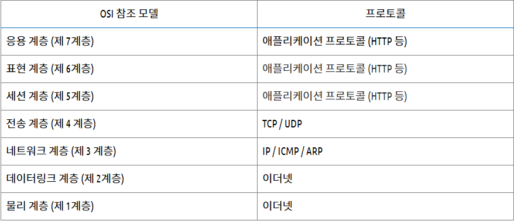

프로토콜
프로토콜이란 네트워크 통신을 위한 통신규칙을 의미한다.
프로토콜의 역할은 데이터의 캡슐화와 캡슐 해제화를 하는 것이다. 네트워크 통신에서 OSI 참조 모델의 계층을 넘어설 때마다 데이터를 캡슐에 넣거나 꺼낸다.

<OSI 참조 모델과 프로토콜>
이더넷
- 이더넷은 OSI 제 1계층과 제 2 계층의 기술 규격이다. 유선 네트워크의 경우 거의 대부분이 이더넷을 사용한다.
- 이더넷은 네트워크 계층으로부터 받은 데이터(패킷)에 프레임의 처음을 나타내는 프리앰블(preamble)과 목적지(수신자)와 출발지(송신자)를 나타내는 헤더, 비트 오류체크에 사용하는 FCS(Frame Check Sequence)를 추가하여 프레임을 생성한다.
- 이더넷은 MAC 주소라는 48비트로 된 식별자를 사용하여 컴퓨터를 식별한다.
IP
- IP는 전송 계층 (제 4계층)으로부터 받은 데이터(세그먼트)에 IP 헤더를 붙여 패킷으로 만드는 역할을 한다.
- IP헤더에는 여러 필드 값(버전,헤더길이,프로토콜 등), 출발지 IP주소, 도착지 IP주소가 들어간다.
- IP는 IP 주소라는 32비트로 된 식별번호를 사용하여 컴퓨터를 식별한다.
MAC주소
- MAC 주소란 데이터링크 계층(제 2계층)에서 통신을 위해 사용되는 48비트로 된 식별자이다.
- MAC 주소는 8비트 마다 하이픈( - ) 이나 콜론 ( : ) 으로 구분하여 16진수로 표기한다.
ICMP
- ICMP는 TCP/IP에서 IP 패킷을 처리할 때 발생되는 문제를 알려주는 프로토콜이다.
ARP
- ARP는 MAC 주소와 IP 주소를 협조하면서 이용할 수 있도록 물리와 논리의 다리 역할을 한다.
- 네트워크 통신을 하기 위해서는 제 3계층으로부터 받은 패킷을 프레임으로 만들어 케이블로 흘려보내야 하는데 이때 출발지 MAC 주소는 자기 자신의 NIC에 쓰여 있는 MAC 주소라서 알 수 있지만 목적지 MAC 주소는 알 수가 없다. 이때 ARP를 이용하여 IP 주소로부터 MAC 주소를 구할 수 있다.
TCP / UDP
- TCP
- TCP는 전송 제어 프로토콜로 IP와 함께 TCP/IP로 불리며 제 4계층(전송 계층)에서 사용되는 프로토콜이다.
- TCP는 데이터를 송신할 때 마다 확인 응답을 주고 받는 절차가 있어서 통신의 신뢰성을 높인다.
- 웹이나 메일, 파일 공유 등과 같이 데이터를 누락시키고 싶지 않은 서비스에 주로 사용된다.
- UDP
- UDP는 TCP와 함께 데이터 그램으로 알려진 단문 메시지를 교환하기 위해 사용하는 프로토콜이다.
- 테이터만 보내고 확인 응답과 같은 절차를 생략할 수 있으므로 통신의 신속성을 높인다.
- 주로 DNS, VoIP 등에 사용 된다.
HTTP(HyperText Transfer Protocol)
- HTTP는 클라이언트와 서버 사이에 이루어지는 요청/응답(request/response) 프로토콜이다.
- 클라이언트인 웹 브라우저가 HTTP를 통하여 서버로부터 웹페이지(HTML)나 그림 정보를 요청하면, 서버는 이 요청에 응답하여 필요한 정보를 해당 사용자에게 전달하게 된다.
HTTPS(HyperText Transfer Protocol over Secure Socket Layer)
- 통신 프로토콜인 HTTP의 보안이 강화된 버전이다.
- HTTPS는 통신의 인증과 암호화를 위해 넷스케이프 커뮤니케이션즈 코퍼레이션이 개발한 넷스케이프 웹 프로토콜이며, 전자 상거래에서 널리 쓰인다.